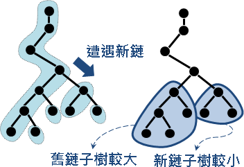

Tree資料結構: Heavy-Light Decomposition
Heavy-Light Decomposition
想查詢一棵樹上任意一條路徑的權重，直覺就得到一個O(V)方法，最差情況是這棵樹恰為一條長鏈。
長鏈有很棒的資料結構。只要找出樹上所有長鏈，每條長鏈套用偽線段樹、BIT、Sparse Table、BST、Heap，就能降低時間複雜度。
找長鏈怎麼找呢？先用一次Graph Traversal算出每棵子樹有多少節點。然後，樹上每個節點各自連向最大的子樹。最後，自然形成了鏈，樹上每個節點都隸屬於某條鏈。
這種分割一棵樹成為數條鏈的手法，稱作「重輕分解」。中文網路上意譯為「樹鏈剖分」。

由根往葉走，一旦遭遇新鏈，新鏈子樹小於等於原鏈子樹，剩下的節點數量不到一半，沿途最多遇到logV條鏈。一條路徑藉由LCA拆成兩段，沿途最多遇到2logV條鏈。
時間複雜度
一條鏈最多V個點，一條鏈實施區間查詢為O(logV)。一棵樹最多V條鏈，但是一條路徑最多只遇到2logV條鏈、實施2logV次區間查詢。
樹鏈剖分為O(V)，建立所有長鏈們的資料結構為O(VlogV)，查詢LCA為O(logV)，查詢一條路徑為O((logV)^2)。
Timus 1553 Sphere QTREE ICPC 4960 UVa 12424